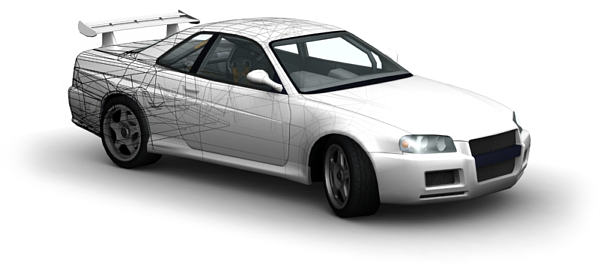

Welcome to the software development kit for Crashday.
The SDK of Crashday is a selection of tools and documentation to help you bringing your custom vehicles and custom track pieces to Crashday. This documentation gives a
detailed explanation on the overall file structure of Crashday, the meaning of different file types and tools as well as the process of creating custom content. You will
find the official guidelines right here!
 The Crashday SDK is directly provided by moonbyte/Replay Studios, the developers of Crashday. No form of support will be given on the SDK, neither by e-mail nor phone. If you have problems or questions, please use the official forums at www.crashday.com and ask for assistance.
The Crashday SDK is directly provided by moonbyte/Replay Studios, the developers of Crashday. No form of support will be given on the SDK, neither by e-mail nor phone. If you have problems or questions, please use the official forums at www.crashday.com and ask for assistance.
You are using the SDK and its tools at your own risk.
Thank you!